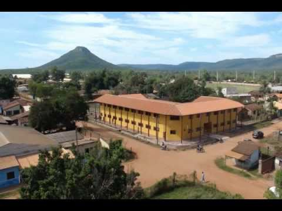
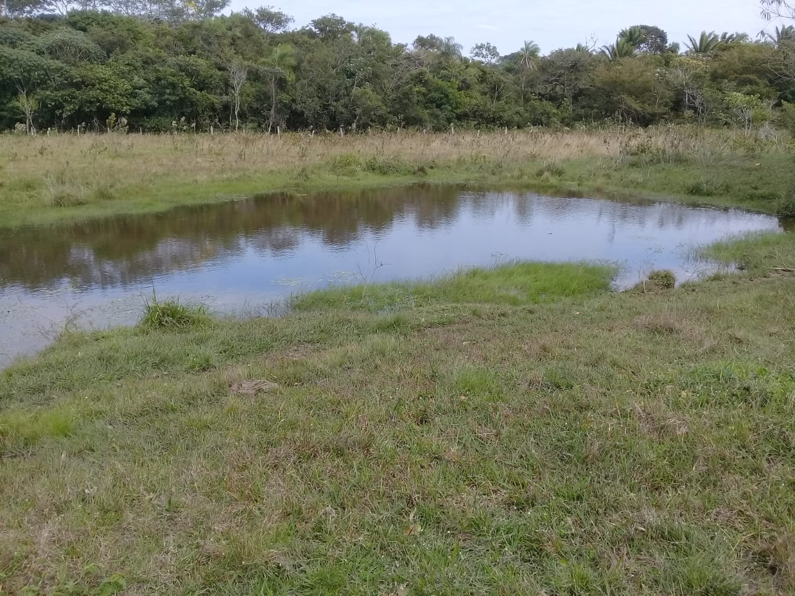

Bienvenidos a la Revista de la U.E. Oscar Unzaga de la vega
Aquí encontrarás las últimas noticias, actividades y logros de nuestro colegio. ¡Mantente informado sobre nuestra comunidad educativa!
Video: Ensayo de la banda.
activida de de venta de recaudación de fondos para la U.E
Fecha: 27 de agosto de 2024
gracias a la directora eldy julio que con sus actividades se pudo recaudar fondo para la U.E con desayunos dia a dia en tiempos de frios
Actividad Extracurricular: Día del Deporte
Fecha: 20 de octubre de 2023
El colegio organizó un día lleno de deportes y diversión. Todos los participantes recibieron medallas de participación y compartieron momentos inolvidables.
la gran feria de venta en la U.E para el matenimiento de la dirección
Fecha: 18 de junio de 2023
En los planes de la directora se puso en planes la venta de objetos que traigan los estudiantes de sus casa para asi poder venderlos y tubimos visitas de los padres

REUNIÓN DEL GOBIERNO ESCOLAR:El debate de todos los precidentes
Fecha: 22 de septiembre de 2024
se llevo acabo en la U.E el debate de todos los precidentes dando cada uno sus propuestas para llevar por delante a la U.E en cualquier actividad con la distrital
Historia del Colegio
Fundado en 1980, el Colegio Ejemplo ha sido un pilar en la educación local. Comenzamos con solo 50 estudiantes y hemos crecido hasta albergar a más de 500. Nuestra misión es formar líderes del mañana con valores sólidos.
A lo largo de los años, hemos logrado certificaciones nacionales y participado en proyectos internacionales, evolucionando siempre con las necesidades de nuestra comunidad.
En el año 1975, se obtuvo el terreno de 150mt2 para la construccion de la unidad educativa con todo esfuerso se logro levantar y el cimienzo del relleno de las sanjas
Infraestructura

Nuestro campus cuenta con aulas modernas equipadas con tecnología de vanguardia, laboratorios de ciencias, biblioteca digital y campos deportivos. Recientemente, inauguramos un nuevo auditorio con capacidad para 300 personas.
Todo está diseñado para fomentar un ambiente de aprendizaje seguro, inclusivo y estimulante.
Estudiantes
REGLAMENTO INTERNO ESTUDIANTIL DE LA UNIDAD EDUCATIVA
"OSCAR UNZAGA DE LA VEGA"
RESPECTO POR LA NORMATIVA
El presente reglamento interno de aplicación para las/los estudiantes de la unidad educativa “Oscar Unzaga De La Vega” tiene como base, la constitución política del estado, la 070 Avelino siñani y e Lizardo Pérez y acuerdo con los padres de familia, por lo tanto, todos/as estudiantes deben respetar y cumplir las normativas institucionales, valorar y cuidar vida como el don más sagrado.
DEBERES DE LA/EL ESTUDIANTES
1. Respetar las autoridades personal docentes, administrativo, de servicio y compañeros
2. Cuidar el inmobiliario y los ambientes de la U.E.
3. Asistir con puntualidad y regularidad a clases de acuerdo al calendario y horario establecido por la U.E.
4. Asistir con el uniforme consensuado por los padres de familia
a) UNIFORME DE DIARIO DEL NIVEL INICIAL COMUNITARIO PRODUCTIVO EN FAMILIA ESCOLARISADA:
• Niñas y niños deben asistir a clases con el uniforme propuesto por la maestra y los padres de familia.
• Niña: Falda color plomo y camisa o polera blanca
• Niños: pantalón plomo, camisa o polera blanca
b) UNIFORME DE DIARIO DEL NIVEL PRIMARIO COMUNITARIO VOCACIONAL Y NIVEL SEGUNDARIO COMUNITARIO PRODUCTIVA:
• Los estudiantes deben asistir con el uniforme oficial del colegio.
• Niñas y señoritas: Blusa blanca o polera y falda plomo o pantalón debajo de la rodilla.
• Niños y jóvenes: camisa blanca o polera y pantalón plomo de vestir solo en caso de frio el uniforme es flexible con el pantalón del colegio oficial
c) UNIFORME DE EDUCACION FISICA PARA NIÑOS, NIÑAS, SEÑORITAS Y JOVENES DE TODOS LOS NIVELES:
• Todo estudiante debe aportar el uniforme correspondiente y asistir higiénicamente a clases.
• Polera blanca, short y medias blancas y zapatillas adecuada
DERECHOS DE LA/EL ESTUDIANTE:
1. Ser respetado y considerado según los derechos establecido por leyes constitucionales y normativa vigente.
2. Recibir orientación, apoyo adecuado y un trato digno, respetuoso, tolerante y justo sin discriminación alguna, razones de, cultura, genero, sexo, idioma, región y otros.
3. Contar con una organización estudiantil.
4. Recibir una educación integral con valores humano y sólida preparación académica impartidas por profesores competentes.
5. Ser apoyado/a y acompañado/a en su proceso de aprendizaje.
6. Utiliza las instalaciones inmobiliario de la U.E. DE ACUERDO A NORMAS EDUCATIUVA.
7. Ser sancionado con conocimiento del consejo educativo comunitario, comisión disciplina y dirección en caso de cometer una falta leve, grave o muy grave.
REGIMEN DISCIPLINARIO
DE LA DISCIPLINA.
La disciplina es el orden son las bases primordiales de nuestra unidad educativa ya que los responsables son los funcionarios administrativos, maestro/as padres/madres de familias y/o apoderados de las/os estudiantes.
TIPIFICACION DE FALTAS:
•
FALTAS LEVES DE LA/EL ESTUDIANTE
a) No portar el cuaderno de aviso o agenda escolar.
b) Causar desorden dentro el aula
. c) Acumular más de tres atrasos.
d) Ingresar al aula que no le corresponda sin autorización.
e) Comprar, comer y beber alimentos durante las clases.
f) Desperdiciar el agua en los grifos ensuciando los ambientes del colegio.
SANCIONES A LAS FALTAS LEVES DE LA/EL ESTUDIANTES:
a) Llamada de atención verbal por parte del docente.
b) Reflexión por parte del maestro.
c) Llamada de atención por dirección.
FALTAS GRAVES DEL/LA ESTUDIANTES
a) Esta prohibido salir de la U.E. durante el periodo de clases.
b) Los estudiantes deben evitar todo tipo de violencia, verbal, física, psicológica, sexual por motivos racistas discriminatorias hacia sus compañeros, profesores y todo servidor público dentro de la U.E.
c) Uso inadecuado de los medios tecnológicos en el ambiente educativo.
d) Uso de un medio tecnológico sin requerimiento del maestro.
e) Realizar grafitis dentro del ambiente educativo en paredes, pisos, techos, puertas, mesas, pizarras, etc.
f) Asistir de manera inadecuada a la unidad educativa tanto varones como mujeres.
g) Asistir de manera natural y con aseo de higiene correspondiente.
SANCIONES A FALTAQ GRAVES DE LA/EL ESTUDIANTE
De acuerdo al tipo de frecuencia de la falta cometida se dispondrá las siguientes sanciones.
a) Compromiso escrito de la/el estudiante de no reincidir de las faltas, en presencia de sus padres o tutor encargado.
b) Suspensivo de uno a cinco días de clases, de acuerdo a la edad y gravedad de la falta.
c) A partir del quinto día de retraso los docentes valoraran en la dimensión del ser y decidir.
d) Suspensión de clases con trabajo comunitarios, en caso de reincidir de falta graves.
e) En caso de causar daño a la infraestructura de la U.E. él/ella estudiante debe hacer cargo de su reparación u resarcimiento, en lapso de 3 días.
f) De los medios tecnológico que fueron usado contraviniendo los establecido anterior se decomisaran para luego ser devuelto de acuerdo a los siguientes criterios:
- La primera vez, se devolverá al estudiante, después de 1|semana
- La segunda vez, el padre o madre de familia, después de 2 semanas
- La tercera vez, será retenido hasta fin de año y se devolverá al padre o madre de familia el último día de clases (el padre o madre de familia podrá recoger el aparato tecnológico con una suma de 10 bs).
FALTA MUY GRAVES DE LA/EL ESTUDIANTE
Son falta muy graves las que afectan a los estudiantes en el aspecto psicológico, físico e integridad moral, y a institución educativa tales como:
a) Reincidir en las faltas graves
b) Robo o hurto de objetos de valor al interior o fuera de la U.E.
c) Pertenecer o formar parte de pandilla o grupo delictivo.
d) Acoso sexual entre estudiante.
e) Comprar, venta, tenencia y/o consumo de bebida alcohólica, cigarro, estupefaciente y/o sustancia controlada, en el interior del establecimiento.
f) Tenencia de arma.
g) Crear, o publicar material que atente contra la imagen y/o dignidad de las personas o de la institución, materiales pornográficos difundido a través de página web, blogs, redes de sociales y otros medios.
SENSACIONES A LAS FALTAS MUY GRAVES DE LA/EL ESTUDIANTES
Una vez comprobado el/los/echo y circunstancia en las que se cometieron este tipo de falta, se procederá norma vigente (RETIRO DEFINITIVO) del/la estudiante. Elaborando un informe hacia las autoridades educativas pertinente de la U.E.
- En caso de que la falta tuviera tipificadas con delitos de acuerdo a la ley, se precederá a comunicar, informe y solicitar la intervención, de las autoridades pertinentes a nuestra comunidad.
NOTA ACLARATORIA
Se recomienda al os estudiantes traer teléfonos celulares, joyas u objetos de valor ya que el colegio9 no se responsabiliza de las pérdidas de los mismo.
ACTIVIDAEDES A REALIZAR
A) Dar a conocer al reglamento interno de la u unidad educativa a los profesores socializar al reglamento interno sobre la disciplina acto mal ayuda de cada tutor de diferentes aulas
B) Implementación de un libro negro de estudiantes con faltas leves, graves y muy graves.
C) Socializar el reglamento interno de la unidad educativa con los padres de familia.
D) Controlar en la puerta principal el uniforme correspondiente en nuestra unidad educativa (con el apoyo de la ‘Proción y pre promoción. Implementación y una brigada de seguridad estudiantil) (promoción-pre promoción).
E) Hacer énfasis en cada acto cívico sobre actos disciplinario y las sanciones para conocimiento general de los estudiantes.
F) Hablar con los estudiantes que tienen problema de disciplina, entre ellos vestuarios, vocabulario, violencia, bullin ente otros.
G) Implementar en dirección un libro de actas para estudiantes disciplinados.
H) Solicitare, al SLIM o policía para impartir charlas para los padres de familia y estudiantes sobres temas relacionados con la conducta y violencia familiar.
I) Mostrar el respecto en las diferentes actividades en la que participe dentro y fuera del establecimiento.
J) Implementación de cajitas de celulares o por curso.
NIVEL PROMARIO
Queda totalmente prohibido el uso de aparatos tecnológicos. (cada maestro tutor de estar encargado de controlar a sus estudiantes que no deben portar artefacto de valor y comunicar a los padres de familia para recibir el apoyo desde casa.
NIVEL SECUNDARIO
Queda totalmente prohibido el uso de celulares en clases, solo en caso de que el maestro trabaje haciendo uso de los celulares, pueden los estudiantes proceder hacer uso del mismo.
COMISION DISIPLINARIA
Transitara los cursos en cualquier momento para serle respectivo control del uso de la cajita de celulares. Los estudiantes que sean encontrados haciendo uso del celular sin consentimiento del maestro, el aparto tecnológico será descamisado por 1 semana por primera vez, en caso de reincidió se decomisara por 3 semanas y por tercera vez se decomisara hasta fin de año.
Los maestros deben apoyan con el control de los celulares, en caso de decomiso deben entregar a la comisión disciplinaria.
K) ESPACIO DE REFLECION a primera hora de calces cada maestro cada maestro, los días miércoles y viernes, deben tocar temas de valores, violencia psicológica y física, bullen, violencia contra la mujer, derechos y deberes de los niños, niñas y adolescentes, durante 10min etc.
L) Cada maestro está obligado a ser conocer si observa casos de violencia verbal, psicológicas físicas en primera estancia dentro y fuera del aula.
M) Se recomienda a cada maestro ser estricto en sus horas de clases en caso de indisciplina de los estudiantes para incentivar un entorno respetuoso entre estudiantes y maestro.
N) Se le pide cada maestro respetar el horario de salida de clases, para mejor control de los padres de sus hijos/as.
O) Loa maestros deben informar al grupo de WHATSAPP cuando los estudiantes salen de clases de marera anticipada, para que los tutores distribuyan la información a los padres de familia para un mejor control de los padres hacia sus hijos/as.
P) Acer uso correcto del armario para maestro.
Contactos

Dirección: Calle Escuela 123, Ciudad Ejemplo, CP 12345
Teléfono: (123) 456-7890
Email: info@colegioejemplo.edu
secretaria:(677) 358-830
directora:(765) 964-958
Ayuda

Preguntas Frecuentes (FAQ)
¿Cómo me inscribo? Visita la sección de estudiantes o contáctanos directamente para un tour guiado.
¿Cuáles son los horarios? De lunes a viernes, 8:00 AM a 3:00 PM. Actividades extracurriculares hasta las 5:00 PM.
Problemas técnicos? Envía un email a soporte@colegioejemplo.edu o usa
🆘 AYUDA
Bienvenido a la sección de Ayuda de nuestra revista escolar digital. Aquí encontrarás información útil para orientarte y aprovechar al máximo todo el contenido que hemos preparado para ti.
📖 ¿Cómo usar la revista?
Navega por la revista utilizando el índice principal o los botones de navegación ubicados en la parte superior o inferior de las páginas.
Puedes hacer clic sobre los títulos, imágenes o enlaces para acceder directamente a los artículos, entrevistas o secciones especiales.
Si deseas regresar al inicio, selecciona el botón o ícono de “Inicio” en cualquier página.
❓ Preguntas frecuentes
¿Cada cuánto se publica la revista?
Publicamos una nueva edición de forma periódica con temas educativos, culturales y de interés para toda la comunidad escolar.
¿Puedo enviar mis ideas o participar en la revista?
¡Por supuesto! Si deseas colaborar con artículos, dibujos, fotos o sugerencias, comunícate con el equipo editorial.
¿Dónde puedo leer las ediciones anteriores?
Puedes acceder a nuestras ediciones anteriores desde la sección “Ediciones pasadas” o en los enlaces compartidos por el colegio.
📬 Contacto y soporte
Si tienes dudas, comentarios o sugerencias, puedes comunicarte con nosotros a través de:
📧 revistaescolar@gmail.com
📱 Instagram / Facebook: @revista_escolar
🧾 Créditos
Equipo de redacción y diseño: [JULIO CESAR MAERTEN ROJAS].
Institución educativa: [OSACR UNZAGA DE LA VEGA].
Agradecemos a nuestros profesores y compañeros por su apoyo en la creación de este proyecto digital.
⚖️ Derechos
El contenido de esta revista pertenece a sus autores y colaboradores. Se permite su difusión citando la fuente y respetando los créditos correspondientes
Acerca de Nosotros

Somos un equipo dedicado a la educación integral. Nuestro personal incluye profesores certificados y administradores experimentados. Valoramos la diversidad y el crecimiento personal de cada estudiante.
Misión: Educar con excelencia y empatía.
Visión: Ser líderes en innovación educativa en nuestra región.
DESCIPCIÓ:Describir los objetivos y procesos de la unidad educativa
creación:el objetivo de crear y poder hacer la revista escolar digital